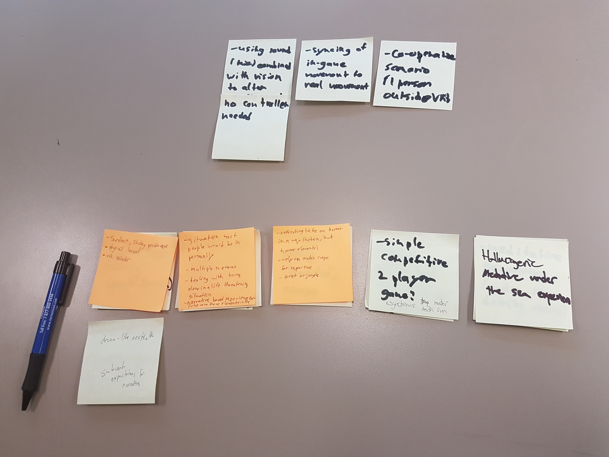
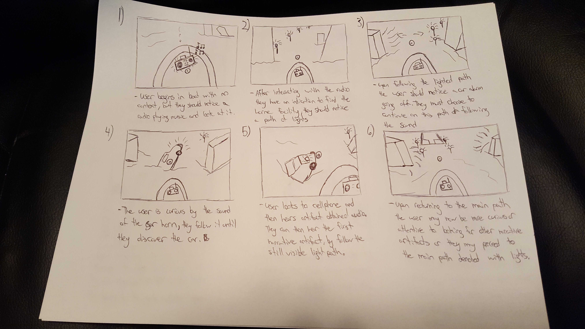

Forlorn is a VR narrative driven exploration game, where the player wakes up in a boat in a flooded abandoned city, and must find out where they are and what happened to them and the city.
Team
Kevin Lamprecht, Darren MacPhail, Andy Bae
Roles
Game Designer, Level Designer, Environment Designer, Producer
Goal
The goal of this 3 week project was to create an immersive experience that emulated a situation that most people would be unlikely to find themselves in. We wanted to evoke feelings of curiosity, foreboding, dread and also isolation, and draw people into our narrative and exploring the environment. We also wanted to make sure that we used the VR technology we had available to full effect, both in the virtual world and also through the physical installation.


Process - Brainstorming
We started off knowing that we wanted to create a VR experience that would not just be recreating something that the player could already do in the real world. After working through an affinity diagram we all agreed that doing something with a boat would be very interesting due to the possible control options presented by it, as well as the reduced risk of a disconnect from the experience due to the player not having to walk.
For the theme and setting, we wanted to focus on having the player feel totally immersed, so we decided to go for a feeling of isolation throughout the experience. The player never encounters any other living beings, and all story exposition is told through environmental design and voice recordings. We wanted to allow players the freedom to navigate the world however they wanted, while giving them guidance through the use of sound and light in the environment.
Process - Implementation
I started off by imagining the general flow of how we wanted the player to progress through our narrative. We defined which were the core narrative pieces, and made sure they were not missbale by the player by putting them on the critical path, while the optional dialogue was added into side areas. These side areas had audio and visual cues to draw the player in, such as flashing car lights and a car alarm. The level was built out in such a way that the player could head straight forward to get to the end, but they would likely be distracted by the stimuli all around them. In addition, the city was covered in a layer of fog to limit the player's vision while adding to the feelings of dread, foreboding and isolation that we wanted to evoke.

Process - Tweaking and Refining
It became apparent almost immediately after beginning testing that players were having trouble navigating the open world. Many would become lost after heading off on a side path, and they seemed to have difficulty navigating in general due to the proximity of the buildings. To solve this, I decided to add light sources to street lamps that would now line the main explorable areas, hopefully creating a boundary of sorts for the player to follow and stay within. In addition to this, I also reduced the amount of space between buildings in non-critical areas, so as to discourage players from exploring the cramped spaces, and ultimately finding the edges of our environment.
Another issue we faced at this point was one of controls. We only had access to an Oculus Rift Dev Kit 2, and so we were not able to make use of any of the standard touch controllers on the market. Due to this, initially I had wanted to use a Wiimote to control the boat, as I had felt like it could be a good mimic of a boat rudder, and would hopefully make the player feel more immersed in the experience. Unfortunately we had some difficulties implementing the Wiimote with Unity on our rushed timeline, and so had to resort to using a standard Xbox controller.
The Result
The final VR experience lasted for around 5 - 10 minutes, and featured 4 optional areas as well as two primary locations: the city and the facility. Since we were designing this game to be exhibited to players of all ages and skill levels, we wanted to make sure that the process of interaction was as smooth as possible. We made use of a reticle along with the head tracking of VR to allow users to interact with objects in the environment. Users would look at an object, and a circle around the reticle would fill up to show that something was about to be triggered. To go along with this, we also added a consistent highlight to all of the objects that were interactable, so that users would not mix up interactable objects with environmental objects.
The Takeaway
My main takeaway from this project was how to work with VR, both for better and for worse. I expected that placing the player in a boat would help to relieve some of the issues of motion sickness by not having to worry about their in-game movements being synced with their actual actions. Unfortunately, I failed to consider the effects that the water would have on the player. We tried many iterations of how the boat interacted with the water, such as having it bob with the water, not bob at all, keeping the camera completely steady, etc. but none really seemed to present a perfect solution. Motion sickness is one of the unfortunate realities of VR, and something I now know to pay attention to closely from the beginning of a VR project. In addition, I think it is important to consider what control scheme the player will be using for your VR experience, and to try to mesh it as much as possible to what their avatar will actually be doing in the game.
Gameplay Trailer
Follow Me: